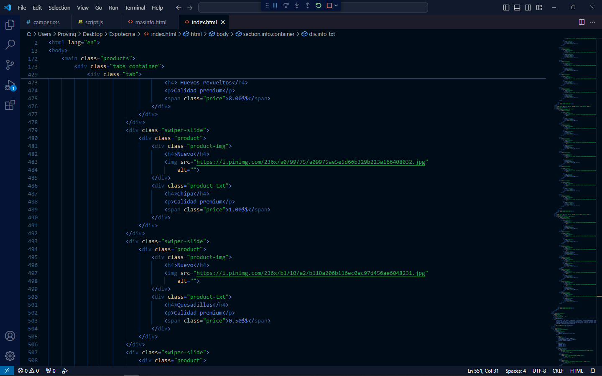
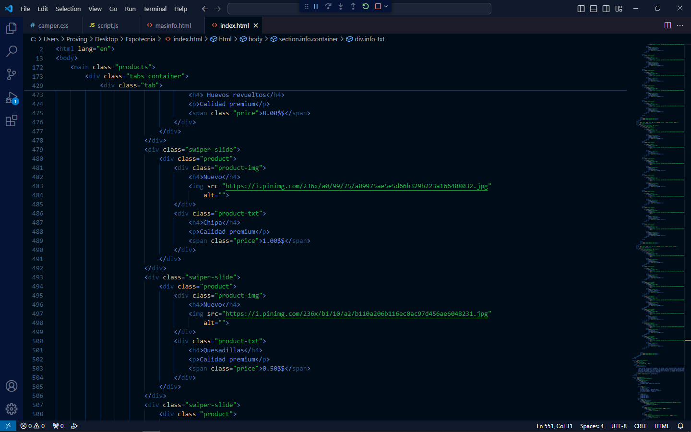
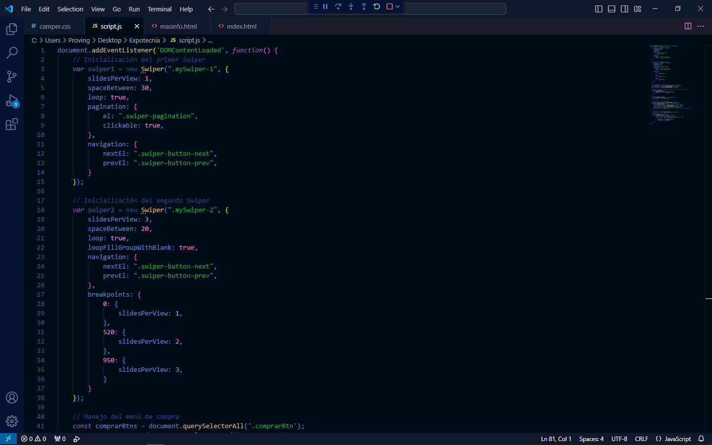
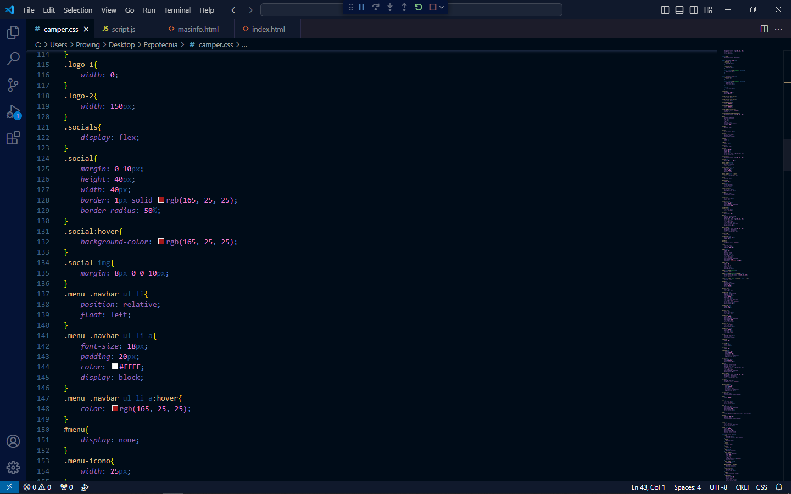
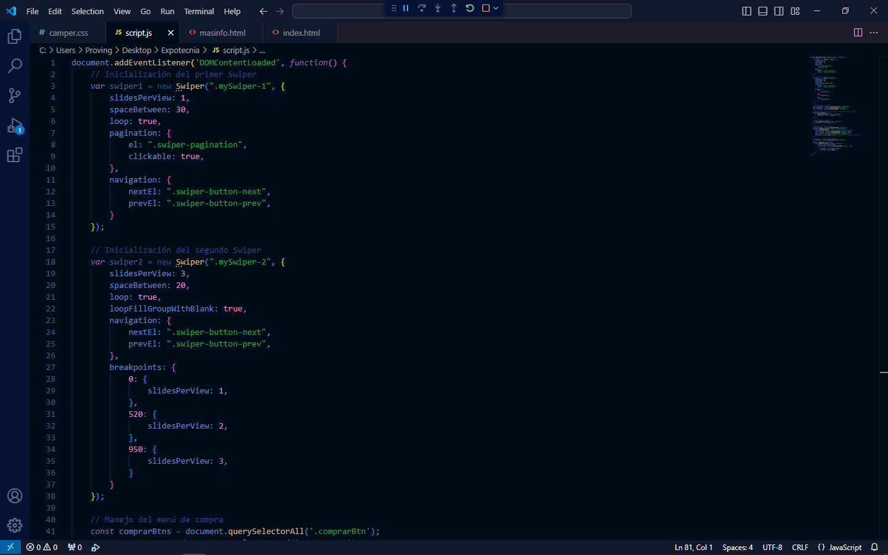
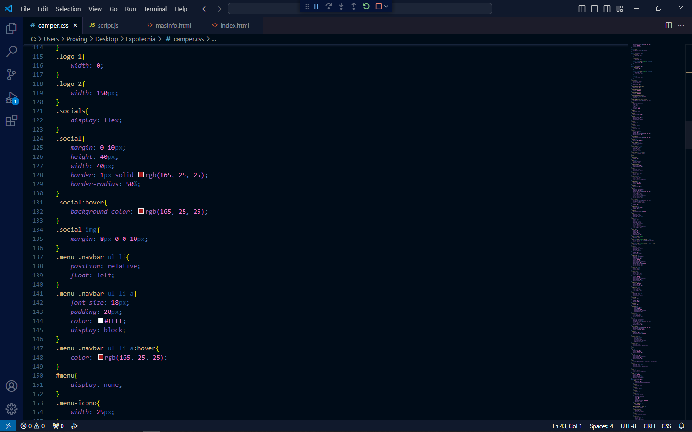

 



Historia de la cafetería.
Camper Coffee: Un Viaje de Sabor y Tradición
En una pequeña ciudad con un encanto rústico y una rica tradición cafetera, nació Camper Coffee el 12 de diciembre de 1987. Fundada por el visionario Javier Morales, la cafetería comenzó como un sueño de ofrecer a los locales un café que no solo despertara el paladar, sino que también narrara historias a través de cada taza.
Javier, un amante del café con una profunda conexión con sus raíces, había viajado por diversas regiones cafeteras del mundo antes de establecer su negocio. Su pasión por el café no solo era profesional, sino también personal. Durante sus viajes, descubrió que el café no solo es una bebida, sino una experiencia cultural que une a las personas.
Con este conocimiento, Javier decidió que Camper Coffee sería un lugar donde se combinaría la calidad del café con la calidez de la comunidad. Compró una pequeña casa de piedra en el centro de la ciudad, que más tarde se transformaría en el acogedor local que los habitantes de la ciudad llegarían a amar.
La primera vez que abrieron las puertas de Camper Coffee, el aroma del café recién molido se extendió por las calles, atrayendo a los transeúntes. La decoración del lugar, con sus muebles de madera artesanal y sus paredes adornadas con fotografías en blanco y negro de las regiones cafeteras que Javier había visitado, ofrecía una sensación de hogar.
Desde el principio, Camper Coffee se distinguió por su compromiso con la calidad. Javier formó alianzas con pequeños productores de café en Colombia, Etiopía y Brasil, garantizando que cada grano llegara a la cafetería con el máximo de frescura y sabor. La tostadora, una pieza de maquinaria antigua que Javier había restaurado personalmente, se convirtió en el corazón del negocio.
A lo largo de los años, Camper Coffee se convirtió en un punto de encuentro para los amantes del café. La cafetería no solo ofrecía una gama de mezclas únicas, sino que también organizaba eventos, desde catas de café hasta charlas sobre la cultura cafetera. Javier, siempre con una sonrisa y una anécdota lista, se convirtió en una figura querida en la comunidad.
La misión de Camper Coffee era más que simplemente servir café; era ofrecer una experiencia que conectara a las personas con la historia detrás de cada taza. Con el tiempo, la cafetería se expandió a nuevas ubicaciones, pero mantuvo el mismo espíritu que la había caracterizado desde el principio.
Hoy en día, Camper Coffee sigue siendo un faro de calidez y calidad, un testimonio del amor y la dedicación de Javier Morales y su equipo. Cada taza de café servida es un recordatorio del viaje que comenzó en 1987 y de la pasión que impulsa la tradición cafetera que une a las personas, una taza a la vez.